NAVIGATION SYSTEM > OPERATION CHECK |
| Check system normal condition |
If the cause of a symptom is any of the following, the corresponding symptom is normal, it is not a malfunction.
| Symptom | Answer |
| A longer route than expected is chosen. | Depending on the road conditions, the navigation ECU may determine that a longer route is quicker. |
| Even when distance priority is high, the shortest route is not shown. | Some paths may not be advised due to safety concerns. |
| When the vehicle is put into motion immediately after the engine starts, the navigation system deviates from the actual position. | If the vehicle starts before the navigation system activates, the system may not react. |
| When running on certain types of roads, especially new roads, the vehicle position deviates from the actual position. | When the vehicle is driving on new roads not available on the map disc, the system attempts to match it to another nearby road, causing the position mark to deviate. |
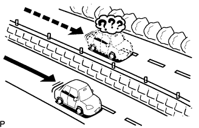 |
The following symptoms are not a malfunction, but are caused by errors inherent in the GPS, gyro sensor, speed sensor, and navigation ECU.
The current position mark may be displayed on a nearby parallel road.
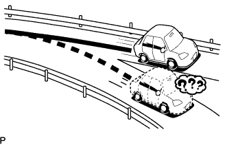 |
Immediately after a fork in the road, the current vehicle position mark may be displayed on the wrong road.
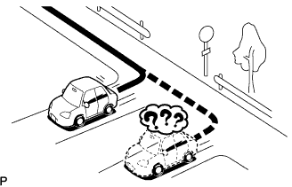 |
When the vehicle turns right or left at an intersection, the current vehicle position mark may be displayed on a nearby parallel road.
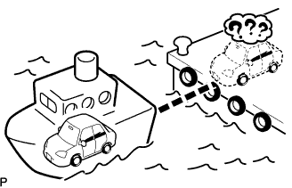 |
When the vehicle is carried, such as on a ferry, and the vehicle itself is not running, the current vehicle position mark may be displayed in the position where the vehicle was until a measurement can be performed by GPS.
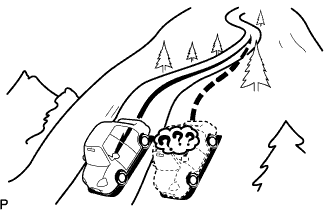 |
When the vehicle is driven on a steep hill, the current vehicle position mark may deviate from the correct position.
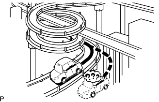 |
When the vehicle makes a continuous turn of 360°, 720°, 1080°, etc., the current vehicle position mark may deviate from the correct position.
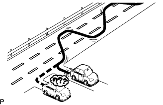 |
When the vehicle moves erratically, such as constant lane changes, the current vehicle position mark may deviate from the correct position.
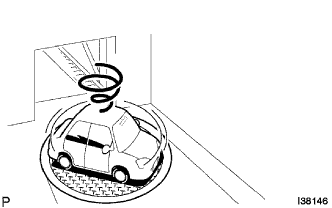 |
When the engine switch is turned on (ACC) or on (IG) on a turntable while parking, the current vehicle position mark may not point in the correct direction. The same will occur when the vehicle starts to move.
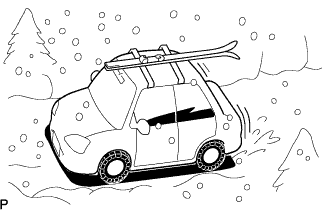 |
When the vehicle is driven on a snowy road or a mountain path with tire chains installed or using a spare tire, the current vehicle position mark may deviate from the correct position.
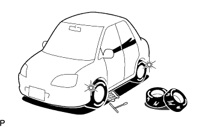 |
When a tire is changed, the current vehicle position mark may deviate from the correct position.
| Check Display Check mode |
Enter diagnostic mode (Click here).
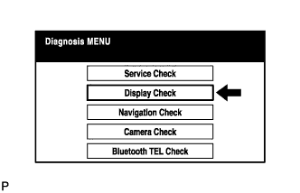 |
Select "Display Check" from the "Diagnosis MENU" screen.
Color Bar Check
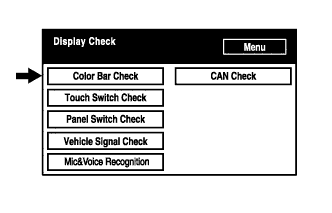 |
Select "Color Bar Check" from the "Display Check" screen.
 |
Select a color bar from the "Color Bar Check Mode" screen.
Check the display color.
Touch Switch Check
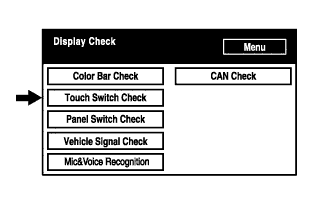 |
Select "Touch Switch Check" from the "Display Check" screen.
Touch the display anywhere in the open area to perform the check when the "Touch Switch Check" screen is displayed.
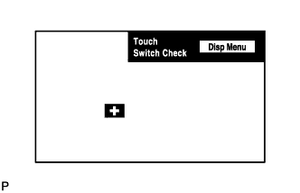 |
Panel Switch Check
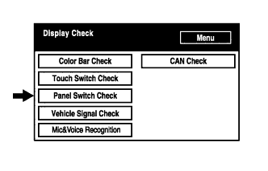 |
Select "Panel Switch Check" from the "Display Check" screen.
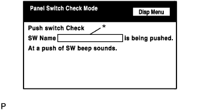 |
Operate each switch and check that the switch name and condition are correctly displayed.
| Display | Contents |
| *: Pushed switch name |
|
Vehicle Signal Check
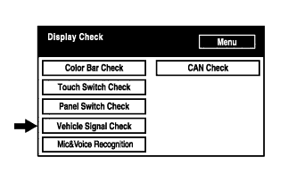 |
Select "Vehicle Signal Check" from the "Display Check" screen.
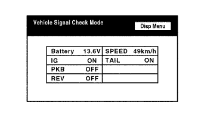 |
When the "Vehicle Signal Check Mode" screen is displayed, check all the vehicle signal conditions.
Mic&Voice Recognition Check
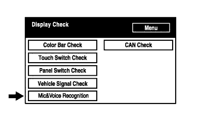 |
Select "Mic&Voice Recognition Check" on the "Display Check" screen to display the "MICROPHONE & VOICE RECOGNITION CHECK" screen.
 |
When a voice is input into the microphone, check that the microphone input level meter changes according to the input voice.
CAN Check
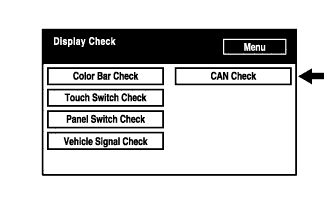 |
Select "CAN Check" from the "Display Check" screen.
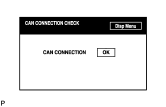 |
Check the CAN CONNECTION CHECK result.
| Check Navigation Check |
Enter Diagnostic Mode (Click here).
Navigation Check
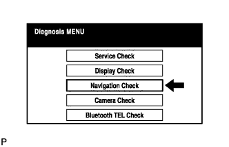 |
Select "Navigation Check" from the "Diagnosis MENU" screen.
GPS Information
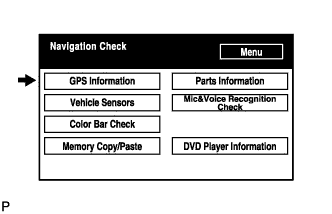 |
Select "GPS Information" from the "Navigation Check" screen.
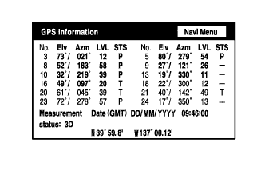 |
When GPS information is displayed, check the GPS conditions.
Vehicle Sensors
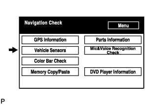 |
Select "Vehicle Sensors" from the "Navigation Check" screen.
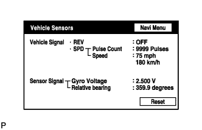 |
Check all the signals and sensors when vehicle signal information is displayed.
Color Bar Check
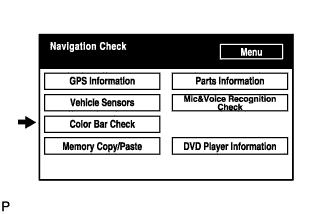 |
Select "Color Bar Check" from the "Navigation Check" screen.
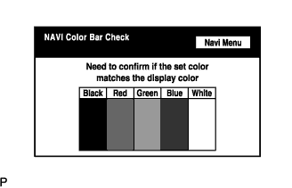 |
Check each color of the color bar when the "NAVI Color Bar Check" screen is displayed.
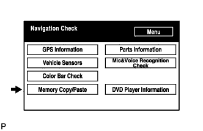 |
Memory Copy/Paste
Parts Information
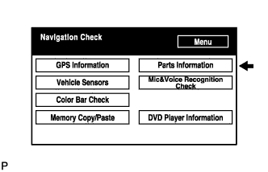 |
Select "Parts Information" from the "Navigation Check" screen.
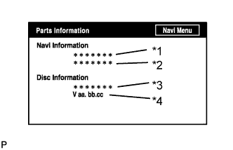 |
Check the navigation and disc information when the "Parts Information" screen is displayed.
| Display | Contents |
| *1: Navigation Manufacturer | Navigation ECU manufacturer is displayed. |
| *2: Navigation Version | Navigation ECU version is displayed. |
| *3: Disc Manufacturer | Map disc manufacturer is displayed. |
| *4: Disc Version | Map disc version is displayed. |
Mic&Voice Recognition Check
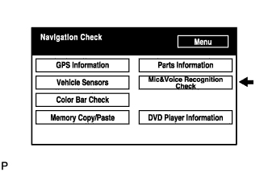 |
Select "Mic&Voice Recognition Check" on the "Navigation Check" screen to display the "MICROPHONE & VOICE RECOGNITION CHECK" screen.
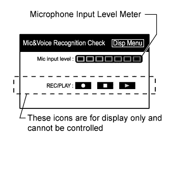 |
When a voice is input into the microphone, check that the microphone input level meter changes according to the input voice.
DVD Player Information
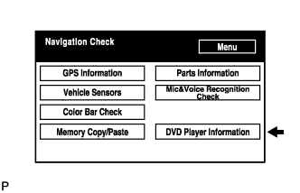 |
Select "DVD Player Information" from the "Navigation Check" screen.
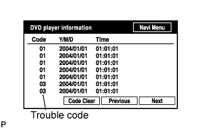 |
Check for DTCs.
| Check "Bluetooth" TEL Check |
Enter diagnostic mode (Click here).
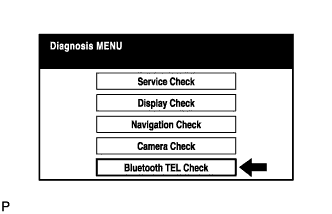 |
Select ""Bluetooth" TEL Check" from the "Diagnosis MENU" screen.
"Bluetooth" Check
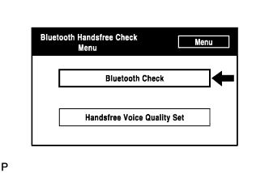 |
Select ""Bluetooth" Check" from the ""Bluetooth" Handsfree Check Menu" screen.
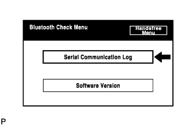 |
Select "Serial Communication Log" from the ""Bluetooth" Check Menu" screen.
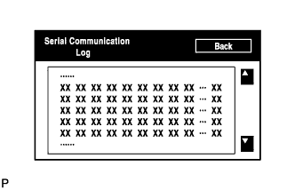 |
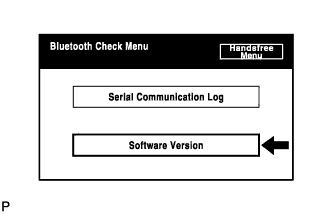 |
Select "Software Version" from the ""Bluetooth" Check Menu" screen.
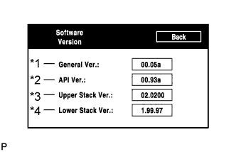 |
| Display | Contents |
| *1: General Version |
|
| *2: API Version | API software version is displayed. |
| *3: Upper Stack Version | Upper Stack version is displayed. |
| *4: Lower Stack Version | Lower Stack version is displayed. |
Handsfree Voice Quality Set
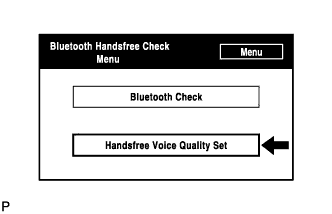 |
Select "Handsfree Voice Quality Set" from the ""Bluetooth" Handsfree Check Menu" screen.
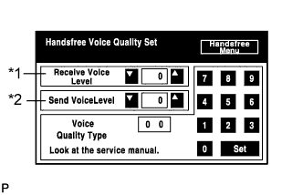 |
Check the handsfree voice level.
| Display | Contents |
| *1: Received voice level adjustment | Setting possible for the voice level received from "Bluetooth" compatible phones. |
| *2: Sent voice level adjustment | Setting possible for the voice level sent to "Bluetooth" compatible phones. |